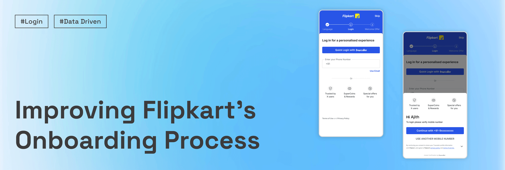
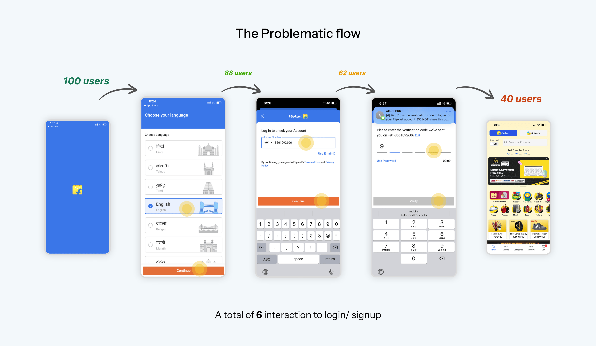
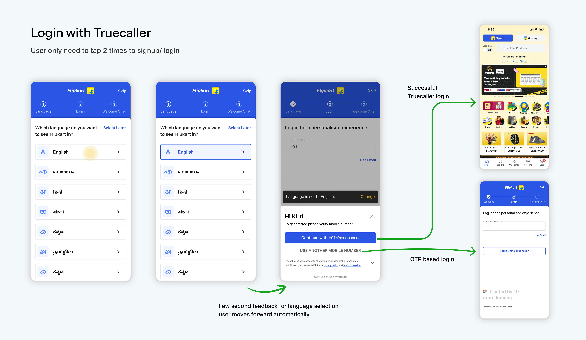
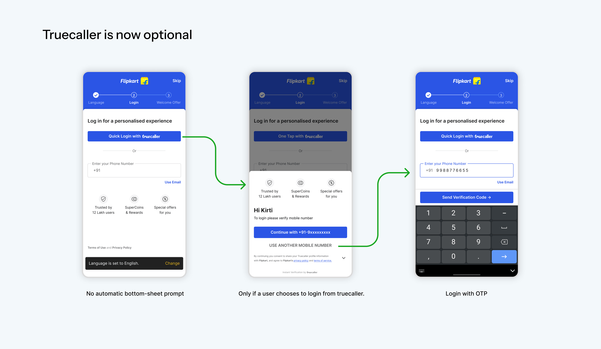
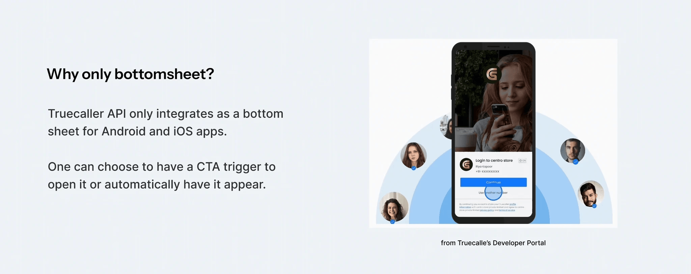
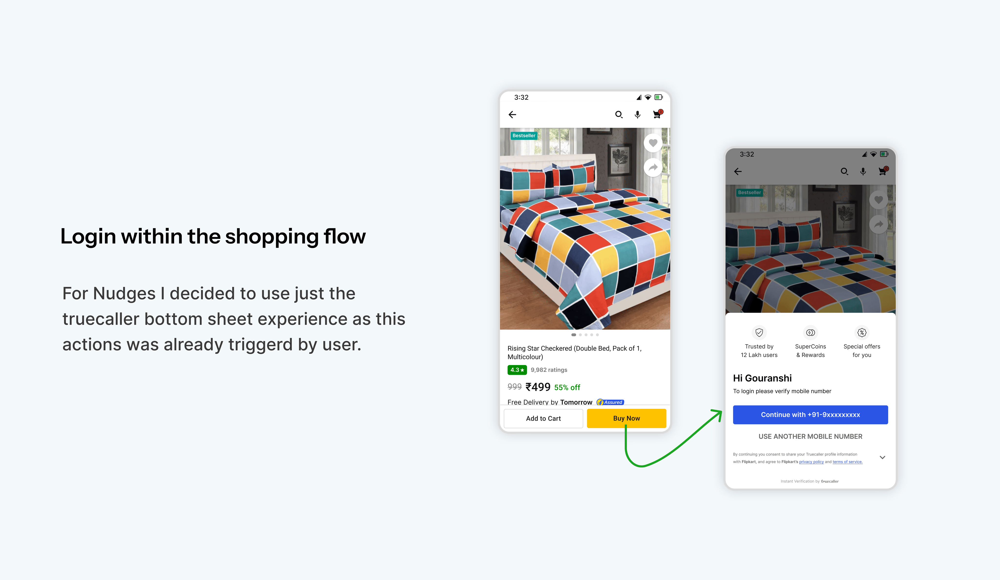
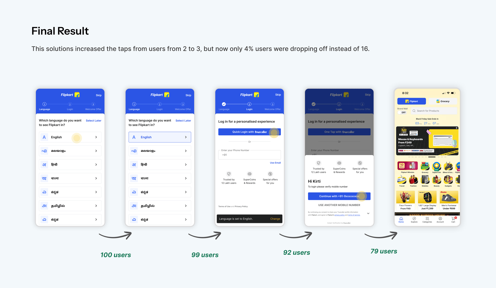

Reducing first-session drop-offs by redesigning how Truecaller login showed up inside onboarding — balancing speed with user control in a high-traffic funnel.

Onboarding was a critical first-touch journey in the Flipkart app. The original sign-up path lost most users before they could shop. We introduced Truecaller for speed; the first ship improved taps but spiked login-page bounce when the bottom sheet auto-opened. I led the refinement toward a user-triggered model so the funnel felt faster without feeling pushy.
The legacy flow stacked language, credentials, OTP, and handoffs — roughly six interactions before access. Funnel data showed only about 40% completing onboarding; drop-off climbed as steps multiplied.
Users were asked for too many decisions too early. The flow optimized for system progression, not user momentum or trust.

We added Truecaller after language selection: a bottom sheet opened automatically on the login screen so people could continue in two taps or fall back to phone + OTP.
In A/B tests, 70% chose Truecaller — the shortcut clearly resonated.

Login-page bounce rose to 16%. The sheet appeared before users had chosen how to sign in — a surprise identity prompt at a trust-sensitive moment. Reducing taps is not always the same as reducing friction.
The issue wasn’t Truecaller — it was timing and control. When a third-party identity surface fires before intent is clear, people hesitate: the UI changes before they’re ready, and it fights the mental model of a normal OTP login.
Product judgment: prompt after intent, not at the earliest moment.I didn’t remove Truecaller — the faster path was clearly valuable. I changed the trigger: keep speed for those who want it, remove the surprise for everyone else.
I removed the automatic bottom sheet and placed a clear “Login with Truecaller” action on the login screen. The sheet opens only after that tap; phone + OTP stayed visible and uninterrupted.

Truecaller stayed for people who wanted the fast path; others weren&rs;t intercepted.
The sheet aligned with a deliberate tap, not page load.
OTP remained the familiar default; no dead ends.
Progression quality improved because the moment felt respectful.
Truecaller’s integration surfaced as a platform bottom sheet on Android and iOS. We couldn’t invent a different primitive without leaving the supported pattern.
The design problem was trigger logic: auto-open vs user-initiated — a product decision under engineering and partner constraints.

Truecaller landed better when tied to shopping actions — e.g. Buy Now — than when it interrupted cold onboarding. Same pattern: connect the prompt to something the user already chose to do.
This wasn’t the core login fix, but it strengthened the principle: prompt after intent, inside flows where trust is anchored by a goal.

The final experience added one deliberate step versus the auto-triggered variant, but removed disruptive exits. Login-page bounce moved from 16% to 4% while keeping the fast path available.
~40% completion through the long onboarding funnel.
70% chose Truecaller, but 16% bounced when the sheet auto-fired.
Explicit CTA; bounce on login down to 4%.

Shortcuts help when people opt in — not when the system opts for them.
Later beats earliest when trust is still forming.
Familiar OTP paths stay visible and uninterrupted.
Work inside the bottom-sheet integration; win on trigger strategy.
I joined after Truecaller had already gone live. My work centered on diagnosing post-rollout behavior and aligning PM, UI, and engineering on a feasible, user-respecting trigger model.
Auto-triggers can increase cognitive load even when tap count drops.
Early onboarding is where surprise does the most damage.
Ship, measure, reframe — especially in growth funnels with partner SDKs.